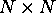
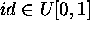
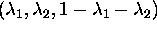

We assume that the agents can be of different types and are randomly mapped from the types space into the hall  , where they actually have their seats.
The type space is the cartesian product of several parameter spaces: the level of perception of quality of the performance, the degree of independence to the behavior of others in the hall, and in a small neighborhood. We assume that the level of perception is a random number  that shows to what extent this agent could capture the whole beauty of play or objective quality of lecture, which is denoted by an exogeneous real parameter Q. The second characteristic of an agent is given by the random vector  , which belongs to a simplex. The first component characterizes the level of individuality, the second captures the sensibility to the observed reaction of her network of friends and other significant individuals in the auditorium, and the third captures the sensibility to the overall reaction. In the general version of the model this vector is distributed uniformly over the simplex.